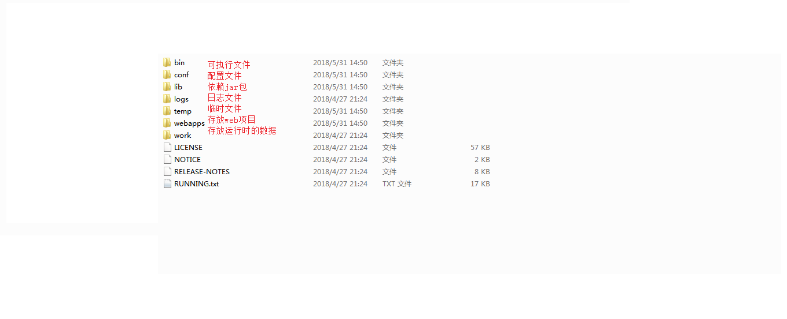

一、web服务器软件
- 概念：
- 服务器：安装了服务软件的计算机
- 服务器软件：接收用户的请求，处理请求，做出响应
- web服务器软件：接收用户的请求，处理请求，做出响应。
- 在web服务器软件中，可以部署web项目，让用户通过浏览器来访问这些项目
- web容器
- 常见的java相关的web服务器软件：
- webLogic：oracle公司，大型的JavaEE服务器，支持所有的JavaEE规范，收费的。
- webSphere：IBM公司，大型的JavaEE服务器，支持所有的JavaEE规范，收费的。
- JBOSS：JBOSS公司的，大型的JavaEE服务器，支持所有的JavaEE规范，收费的。
- Tomcat：Apache基金组织，中小型的JavaEE服务器，仅仅支持少量的JavaEE规范servlet/jsp。开源的，免费的。
- JavaEE：Java语言在企业级开发中使用的技术规范的总和，一共规定了13项大的规范
二、Tomact目录结构（Tomact服务器的底层原理是socket套接字实现的）

Tomcat：web服务器软件
1. 下载：http://tomcat.apache.org/
2. 安装：解压压缩包即可。
* 注意：安装目录建议不要有中文和空格
3. 卸载：删除目录就行了
4. 启动：
* bin/startup.bat ,双击运行该文件即可
* 访问：浏览器输入：http://localhost:8080 回车访问自己
http://别人的ip:8080 访问别人
* 可能遇到的问题：
1. 黑窗口一闪而过：
* 原因： 没有正确配置JAVA_HOME环境变量
* 解决方案：正确配置JAVA_HOME环境变量
2. 启动报错：
1. 暴力：找到占用的端口号，并且找到对应的进程，杀死该进程
* netstat -ano
2. 温柔：修改自身的端口号
* conf/server.xml
* <Connector port="8888" protocol="HTTP/1.1"
connectionTimeout="20000"
redirectPort="8445" />
* 一般会将tomcat的默认端口号修改为80。80端口号是http协议的默认端口号。
* 好处：在访问时，就不用输入端口号
关闭：
1. 正常关闭：
* bin/shutdown.bat
* ctrl+c
2. 强制关闭：
* 点击启动窗口的×
配置:
* 部署项目的方式：
1. 直接将项目放到webapps目录下即可。
* /hello：项目的访问路径-->虚拟目录
* 简化部署：将项目打成一个war包，再将war包放置到webapps目录下。
* war包会自动解压缩
2. 配置conf/server.xml文件
在<Host>标签体中配置
<Context docBase="D:\hello" path="/hehe" />
* docBase:项目存放的路径
* path：虚拟目录
3. 在conf\Catalina\localhost创建任意名称的xml文件。在文件中编写
<Context docBase="D:\hello" />
* 虚拟目录：xml文件的名称
* 静态项目和动态项目：
* 目录结构
* java动态项目的目录结构：
-- 项目的根目录
-- WEB-INF目录：
-- web.xml：web项目的核心配置文件
-- classes目录：放置字节码文件的目录
-- lib目录：放置依赖的jar包
-- 静态资源
项目中src目录下的文件最终会被编译，放到WEB-INF 文件中的classes文件夹中
将Tomcat集成到IDEA中，并且创建JavaEE的项目，部署项目。
三、Servlet(server applet)

- 概念：运行在服务器端的小程序
- Servlet就是一个接口，定义了Java类被浏览器访问到(tomcat识别)的规则。
- 将来我们自定义一个类，实现Servlet接口，复写方法。
- 可以重写init和destroy方法
- 快速入门：
- 创建JavaEE项目
- 定义一个类，实现Servlet接口
- public class ServletDemo1 implements Servlet
- 实现接口中的抽象方法
- 配置Servlet
- 在web.xml中配置：
<!-- 配置servlet -->
<!--servlet实现类-->
<servlet>
<!--指定此servlet的名字，作用是将mapping和servlet联系起来-->
<servlet-name>class1</servlet-name>
<!--指定servlet的类-->
<servlet-class>web.practice.ServletImpl</servlet-class>
<!--指定当前Web应用启动时装载Servlet的次序-->
<load-on-startup>-1</load-on-startup>
</servlet>
<!--定义servlet映射，里面的<servlet-name>必须与前面的名字一致-->
<servlet-mapping>
<servlet-name>class1</servlet-name>
<!--指定servlet映射的路径。-->
<url-pattern>/servletImpl</url-pattern>
</servlet-mapping>
- servlet执行原理
- 执行原理：
- 当服务器接受到客户端浏览器的请求后，会解析请求URL路径，获取访问的Servlet的资源路径
- 查找web.xml文件，是否有对应的<url-pattern>标签体内容。
- 如果有，则在找到对应的<servlet-class>全类名
- tomcat会将字节码文件加载进内存，并且创建其对象
- 调用其方法

- Servlet中的生命周期方法：
- 被创建：执行init方法，只执行一次:init(ServletConfig config)
- Servlet什么时候被创建？
- 默认情况下，第一次被访问时，Servlet被创建
- 可以配置执行Servlet的创建时机。
- 在<servlet>标签下配置
- 第一次被访问时，创建
- <load-on-startup>的值为负数
- 容器将在用户首次访问时加载这个servlet类
- 在服务器启动时，创建
- <load-on-startup>的值为0或正整数
- 容器会按数值从小到大依次加载
- Servlet的init方法，只执行一次，说明一个Servlet在内存中只存在一个对象，Servlet是单例的但是Servlet不是单例设计模式
- 多个用户同时访问时，可能存在线程安全问题。
- 解决：尽量不要在Servlet中定义成员变量。即使定义了成员变量，也不要对修改值
- 注意：单例：单个实例（对象），servlet不是单例设计模式（一个类只能创建一个对象）
- 提供服务：执行service方法，执行多次:service(ServletRequest req,ServletResponse resp)
- 每次访问Servlet时，Service方法都会被调用一次。
- 被销毁：执行destroy方法，只执行一次
- Servlet被销毁时执行。服务器关闭时，Servlet被销毁
- 只有服务器正常关闭时，才会执行destroy方法。
- destroy方法在Servlet被销毁之前执行，一般用于释放资源
- Servlet3.0:注解配置
- 好处：
- 支持注解配置，可以不需要web.xml了
- servlet3.0可以进行注解配置也可以通过web.xml进行配置
- 步骤
- 创建JavaEE项目，选择Servlet的版本3.0以上，可以不创建web.xml
- 定义一个类，实现Servlet接口
- 复写方法
- 在类上使用@WebServlet注解，进行配置
- @WebServlet("资源路径")
- @Target({ElementType.TYPE})
- @Retention(RetentionPolicy.RUNTIME)
- @Documented
- Servlet体系结构
- Servlet(接口)--->GenericServlet(抽象类)--->HttpServlet(抽象类)
- GenericServlet：将Servlet接口中其他的方法做了默认空实现，只将service()方法作为抽象
- 将来定义Servlet类时，可以继承GenericServlet，实现service()方法即可
- HttpServlet：对http协议的一种封装，简化操作
- 定义类继承HttpServlet
- 复写doGet/doPost方法
- Servlet相关配置
- url-partten:Servlet访问路径
- 一个Servlet可以定义多个访问路径 ： @WebServlet({"/d4","/dd4","/ddd4"})
- 路径定义规则：
- /xxx：路径匹配
- /xxx/xxx:多层路径，目录结构（完全路径匹配）
- /user/*(目录匹配)
- /*:任意目录结构（全匹配）
- *.do：扩展名匹配（后缀名匹配）
- servlet3.0新增了一些注解，在类上添加@webServlet，注解里面的name代表的是servlet的name，urlPatterns代表的是请求路径，可以配多个，servlet3.0也是需要在类上实现servlet的接口
四、IDEA与Tomcat的相关配置
- IDEA会为每一个tomcat部署的项目单独建立一份配置文件
- C:\Users\ASUS\.IntelliJIdea2017.3\system\tomcat\_ThirdStep
- 工作空间项目 和 tomcat部署的web项目
- tomcat真正访问的是“tomcat部署的web项目”，"tomcat部署的web项目"对应着"工作空间项目" 的web目录下的所有资源
- WEB-INF目录下的资源不能被浏览器直接访问。
- 断点调试：使用"小虫子"启动 dubug 启动
五、http请求消息
- 概念：Hyper Text Transfer Protocol 超文本传输协议
- 传输协议：定义了，客户端和服务器端通信时，发送数据的格式
- 特点：
- 基于TCP/IP的高级协议
- 默认端口号:80
- 基于请求/响应模型的:一次请求对应一次响应
- 无状态的：每次请求之间相互独立，不能交互数据
- 请求消息数据格式
- 请求行
- 请求方式 请求url 请求协议/版本
- GET /login.html HTTP/1.1
- 请求方式：
- HTTP协议有7种请求方式，常用的有2种
- GET：
- 请求参数在请求行中，在url后。
- 请求的url长度有限制的
- 不太安全
- POST：
- 请求参数在请求体中
- 请求的url长度没有限制的
- 相对安全
- 请求头：客户端浏览器告诉服务器一些信息
- 请求头名称: 请求头值
- 常见的请求头：
- User-Agent：浏览器告诉服务器，我访问你使用的浏览器版本信息
- 可以在服务器端获取该头的信息，解决浏览器的兼容性问题
- Referer：http://localhost/login.html
- 告诉服务器，我(当前请求)从哪里来？
- 作用：
- 防盗链：
- 统计工作：
- 请求空行
- 空行，就是用于分割POST请求的请求头，和请求体的。
- 请求体(正文)：
- 封装POST请求消息的请求参数的（请求体就是用户以post方式提交的数据）
- 字符串格式
POST /login.html HTTP/1.1
Host: localhost
User-Agent: Mozilla/5.0 (Windows NT 6.1; Win64; x64; rv:60.0) Gecko/20100101 Firefox/60.0
Accept: text/html,application/xhtml+xml,application/xml;q=0.9,*/*;q=0.8
Accept-Language: zh-CN,zh;q=0.8,zh-TW;q=0.7,zh-HK;q=0.5,en-US;q=0.3,en;q=0.2
Accept-Encoding: gzip, deflate
Referer: http://localhost/login.html
Connection: keep-alive
Upgrade-Insecure-Requests: 1
username=zhangsan

六、Request
- request对象和response对象的原理
- request和response对象是由服务器创建的。我们来使用它们
- request对象是来获取请求消息，response对象是来设置响应消息
- 请求发生，request对象创建，响应产生request对象销毁。
- request对象继承体系结构：
- ServletRequest(接口)--->HttpServletRequest(接口)--->org.apache.catalina.connector.RequestFacade 类(tomcat)
- request功能
- 获取请求行数据
- GET /day14/demo1?name=zhangsan HTTP/1.1
- 方法
- 获取请求方式：GET
- String getMethod()
- (*)获取虚拟目录：/day14
- String getContextPath()
- 获取Servlet路径：/demo1
- String getServletPath()
- 获取get方式请求参数：name=zhangsan
- String getQueryString()
- (*)获取请求URI：/day14/demo1
- String getRequestURI();
- StringBuffer getRequestURL()
- URL:统一资源定位符
- 统一资源定位符URL（Uniform Resource Locator）是用来表示从因特网上得到的资源位置和访问这些资源的方法。URL给资源的位置提供一种抽象的识别方法，并用这种方法给资源定位。只要能够对资源定位，系统就可以对资源进行各种操作，如存取、更新、替换和查找属性。
- URI：统一资源标识符，代表范围大于URL的范围
- 统一资源标识符URI（Uniform Resource Identifier)是一个用于标识某一互联网资源名称的字符串,该种标识允许用户对网络中（一般指万维网）的资源通过特定的协议进行交互操作。
- 获取协议及版本
- String getProtocol()
- 获取客户机的IP地址
- String getRemoteAddr()
- 获取请求头数据：
- 方法：
- (*)String getHeader(String name):通过请求头的名称获取请求头的值
- Enumeration<String> getHeaderNames():获取所有的请求头名称
- 获取请求体数据
- 请求体：只有POST请求方式，才有请求体，在请求体中封装了POST请求的请求参数
- 步骤：
- 获取流对象
- BufferedReader getReader():获取字符输入流，只能操作字符数据
- ServletInputStream getInputStream():获取字节输入流，可以操作所有类型数据
- 再从流对象中拿数据
- 其他功能：
- 获取请求参数通用方式：不论get还是post请求方式都可以使用下列方法来获取请求参数
- String getParameter(String name):根据参数名称获取参数值 username=zs&password=123
- String[] getParameterValues(String name):根据参数名称获取参数值的数组 hobby=xx&hobby=game
- Enumeration<String> getParameterNames():获取所有请求的参数名称
- Map<String,String[]> getParameterMap():获取所有参数的map集合
- 注意：中文乱码问题：（编码和解码的字符集不一致）
- get方式：tomcat 8 已经将get方式乱码问题解决了
- post方式：会乱码，解决：在获取参数前，设置request的编码request.setCharacterEncoding("utf-8");
- 请求转发：一种在服务器内部的资源跳转方式
- 步骤：
- 通过request对象获取请求转发器对象：RequestDispatcher getRequestDispatcher(String path)
- 使用RequestDispatcher对象来进行转发：forward(ServletRequest request, ServletResponse response)
- 特点：
- 浏览器地址栏路径不发生变化
- 只能转发到当前服务器内部资源中。
- 转发是一次请求
- 请求转发代码执行后，该代码之后的代码还会继续执行
- 注意：资源的路径不需要添加虚拟目录
- 共享数据：
- 域对象：一个有作用范围的对象，可以在范围内共享数据
- request域：代表一次请求的范围，一般用于请求转发的多个资源中共享数据
- 方法：
- void setAttribute(String name,Object obj):存储数据
- Object getAttitude(String name):通过键获取值
- void removeAttribute(String name):通过键移除键值对
- 获取ServletContext：
- ServletContext getServletContest()
- BeanUtils.populate(Object,map):将map集合中的数据封装到对象中
- JavaBean：标准的Java类
- 要求：
- 类必须被public修饰
- 必须提供空参的 构造器
- 成员变量必须使用private修饰
- 提供公共的setter和getter方法
- 功能：封装数据
- 概念：
- 成员变量：
- 属性：setter和getter方法截取后的产物
- 例：getUsername()-->Username-->username
- 方法：
- setProperty()：设置属性
- getProperty()：获取对象属性
- populate(Object obj,Map map):将map集合的键值对应信息，封装到JavaBean对象中
七、http响应消息
- 请求消息：客户端发送给服务器端的数据
- 响应消息：服务器端发送给客户端的数据
- 数据格式：
- 响应行
- 组成：协议/版本 响应状态码 状态码描述（HTTP/1.1 200 OK）
- 响应状态码：服务器告诉客户端浏览器本次请求和响应的一个状态
- 状态码都是3位数字
- 分类：
- 1xx：服务器就收客户端消息，但没有接受完成，等待一段时间后，发送1xx多状态码
- 2xx：成功。代表：200
- 3xx：重定向。代表：302(重定向)，304(访问缓存)
- 4xx：客户端错误
- 代表：
- 404（请求路径没有对应的资源）
- 405：请求方式没有对应的doXxx方法
- 5xx：服务器端错误。代表：500(服务器内部出现异常)
- 响应头：
- 格式：头名称： 值
- 常见的响应头：
- Content-Type：服务器告诉客户端本次响应体数据格式以及编码格式（数据类型和字符集）
- Content-disposition：服务器告诉客户端以什么格式打开响应体数据
- 值：
- in-line:默认值,在当前页面内打开
- attachment;filename=xxx：以附件形式打开响应体。文件下载
- 响应空行
- 响应体：传输的数据
- 响应字符串格式
HTTP/1.1 200 OK
Content-Type: text/html;charset=UTF-8
Content-Length: 101
Date: Wed, 06 Jun 2018 07:08:42 GMT
<html>
<head>
<title>$Title$</title>
</head>
<body>
hello , response
</body>
</html>
八、Response对象
- 功能：设置响应消息
- 设置响应行
- 格式：HTTP/1.1 200 ok
- 设置状态码：setStatus(int sc)
- 设置响应头：setHeader(String name, String value)
- 设置响应体：
- 使用步骤
- 获取输出流
- 字符输出流：PrintWriter getWriter()
- 字节输出流：ServletOutputStream getOutputStream()（继承自outputstream）
- 使用输出流，将数据输出到客户端浏览器
- 重定向的方式：（资源跳转的方式）
- 通过分别设置响应状态码和响应头的方式设置
//设置状态码
response.setStatus(302);
//设置跳转路径
response.setHeader("location","/day15/responseDemo2");
- 通过sendRedirect()方式实现
response.sendRedirect("/day15/responseDemo2");
- 重定向的特点（redirect）
- 地址栏发生变化
- 重定向可以访问其他站点（服务器）的资源
- 重定向是两次请求，不能使用request对象来共享数据
- 转发的特点：（forward）
- 转发地址栏不变
- 转发只能访问当前服务器下的资源
- 转发是一次请求，可以使用request对象来共享数据
- 路径写法：
- 路径分类：
- 相对路径：通过相对路径不可以确定唯一资源
- 如：./index.html
- 不以/开头，以.开头路径
- 规则：确定的访问的当前资源和目标资源之间的相对位置关系
- ./：当前目录
- ../：后退一级目录
- 绝对路径：通过绝对路径可以确定唯一资源
- 如：http://localhost/day15/responseDemo2 ————/day15/responseDemo2
- 以/开头
- 规则：判断定义的路径是给谁用的，判断请求将来从哪里发出
- 给客户端浏览器使用：需要加虚拟目录(项目访问路径)
- 建议虚拟目录动态获取：request.getContextPath();
- 给服务器使用：不需要加虚拟目录
- 转发路径
- 案例总结：
- response对象在做出一次响应之后会自动被销毁，response获取的流也会被自动销毁
- 解决response输出中文乱码问题及原理（编码和解码不一致，获取流之前设置）
- response.setHeader("content-type","text/html;charset=utf-8");
- response.setContentType("text/html;charset=utf-8");
- 字节输出流
- ServletOutputStream outputStream = response.getOutputStream();
- outputStream.write("你好".getBytes("utf-8"));
九、ServletContext
- 概念：代表整个web应用，可以和程序的容器（服务器）来通信
- 获取：
- 通过request对象获取
- request.getServletContext();
- 通过HttpServlet获取
- this.getServletContext();
- 功能：
- 获取MIME类型
- MIME类型：在互联网通信过程中定义的一种文件数据类型
- 获取：String getMimeType(String file)
- 域对象：共享数据
- ServletContext对象范围：所有用户所有请求的数据，作用域范围大于request域对象
- 共享数据方法：
- void setAttribute(String name,Object obj)
- Object getAttribute(String name);
- void removeAttribute(String name0;
- 获取文件的真实（服务器）路径
- 方法：String getRealPath(String s);
- classLoader()只能获取src下真实目录文件，不能获取web项目目录的文件
- ServletContext和request域对象的区别
- ServletContext域对象：
- 是一个全局的存储信息的空间
- 服务器开始就存在，服务器关闭才释放
- 所有用户公用一个
- request域对象
- 一个用户可以拥有多个
- 作用范围是一次请求的范围